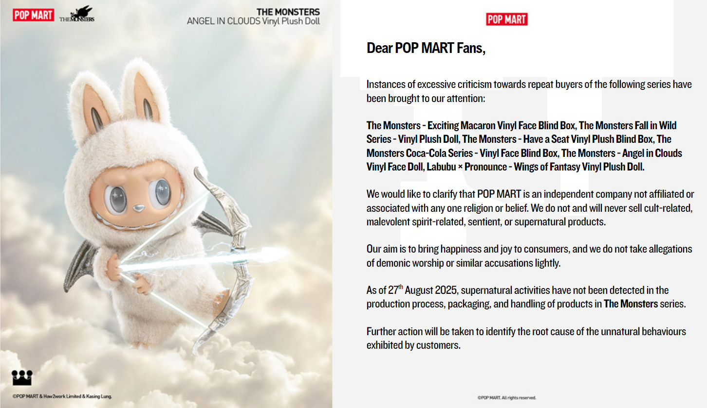

TODAY NEWS
Labubus allegedly Demonic, Cause of Plastic Waste, Autism, and More
_
POP MART Royalty Labubu suspected as cause of global warming, illnesses, and demonic possession
|
Alice Chui in New York |
|
|
As theories grow wilder and disgust is expressed over the overconsumption of collectible toys, POP MART releases a statement denying the involvement of Labubus in demonic and insidious supernatural activity.  |
|
|
However, this statement far from clears things up. It is vague, unprofessional, and provides no evidence to guarantee the safety of the Monsters that many still willingly buy. We are implored to trust their word on this, and if we all know one thing about POP MART, or anything and anyone associated with Labubus, it's that their words are never trustworthy.
To add insult to the injury, the company has chosen a depiction of a Labubu as an angel to attach to the statement- perhaps a show of defiance against the "prudes" attempting to raise awareness regarding its negative spiritual associations. Furthermore, they failed to address the root causes of the backlash.
Religious/Occult SignificanceLabubus are touted as religious symbols in two very different but closely related faiths: Consumerism and Christianity.This text, as taken from the International Journal of Christian Education and Philosophical Inquiry, shows that Lung's Monsters are not free from religious associations. That said, it is vital that we don't run with the belief that Labubus are holy and pure and full of good Christian intent. Strictly speaking, Labubus are considered idols of capitalism, and the Bible doesn't really pull any punches when it comes to what the Lord thinks of false idols. With this, it shouldn't be difficult to connect the dots between Labubus and demons. Especially seeing as they are also capable of causing mass hysteria.
Celebrity EndorsementsIt's no secret that Labubu got it's fame riding on the shoulder (or rather, bag) of pop giant Lalisa Manobal of BLACKPINK. This popularity was only amplified when Rihanna and Kim Kardashian, pop culture icons in their own rights, were spotted wearing the Monster on their bags,Lisa's endorsement is already a source of concern, given her problematic reputation. Labubu's reputation as a safe, friendly creature took a further hit when Lady Gaga, the "Judas" and "Born This Way" singer and consequential blaspheming queer pop icon stated that she was a Labubu in recent TikTok video. Gaga, for those who aren't in the know, is positively entrenched in occult practices and satanism. The pop star, nicknamed "Mother Monster" to her fans, the "Little Monsters", is not exactly the kind of celebrity you want to be endorsing your products.
Neurodivergence & HomosexualitySpeaking of gay icons, the Labubu is supposedly already one in its own right.But being queer is not all voguing and rainbows. There is a more sinister side to it- specifically one that relates to neurodivergence and the correlation, if not causation, between these ailments. A study by Samantha Harker of the Organization for Autism Research has shown that a whopping 70% of autistic individuals have queer identities and have diverse sexual orientations. With this, it can be argued that Labubus can influence people into being both gay and autistic, if not by nature then by the community that supports the consumption of these products. Thus, you should think twice before exposing children to Labubus, lest you open them up to a whole new world of stimming and same-sex attraction.
Overconsumption & WasteLabubus are marketed in the way all fads are marketed, so it shouldn't be a surprise when people stop liking them, stop buying or talking about them, and stop wanting to own them.The target demographic is a desperate one that ties buying and consuming products to their own identity, so it's not difficult to imagine that once the trend's over, the Labubus that they own will be thrown right into the trash. From then on, it's a battle between our environmental efforts and the undecaying plastic corpse of a toy that once ruled the collectible market. And we do have reason to believe that this Labubu craze will end- as all trends do- soon. Sadly, nobody seems to care. After all, Labubus are marketed towards miserable individuals with no individuality separate from their latest purchases, withered adults who seem to believe they should get to relive the "childhood they never had", and children who are easily attracted by the blind-box "gambling" mechanic that promises you a miniscule chance of getting an ultra-rare secret edition doll. Clearly all groups of people who don't mind putting themselves in debt for another few dozen useless, dubiously inanimate plushies on their bag. The consequences of this irrational buying is the waste and environmental consequences that come from its production. The production process of Labubus isn't an environmentally friendly one, with its usage of PVC (Polyvinyl Chloride) and ABS (Acrylonitrile Butadiene Styrene). For reference, PVC is a widely-produced synthetic polymer that can take more than 450 years to biodegrade should it end up in landfill. Even as it decomposes, it turns into microplastics, plaguing the food chain. PVC also releases an insane variety of harmful gases into the air such as phosgene, dioxins, and hydrochloric acid fumes when burned. So there's not a lot of options for someone looking to dispose of their demonic Labubu, which makes it questionable to buy one in the first place. As for ABS, it's a non-biodegradable material that can be recycled albeit with great difficulty as it has a complex composition. We must take the environmental harms of mass-producing Labubus into consideration before contributing to the growing demand for Labubus. But that's basically an overdone argument now, isn't it? I mean, who even cares about acid rain, pollution, and global warming nowadays, anyway? |
|
Alice ChuiJournalist, Writer, Blogger, Proud Cat MomBorn in New York and raised in the ruthless hell of Toronto, Canada, Alice Chui writes about deep, controversial topics such as Labubus and Cats. |
|